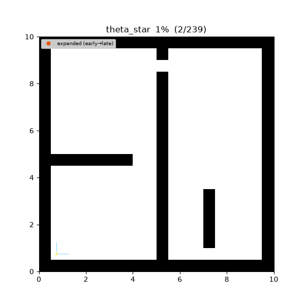
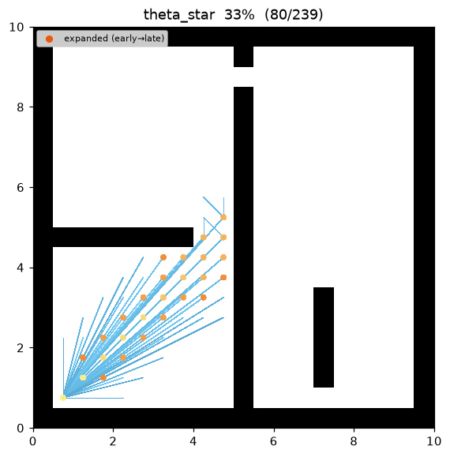
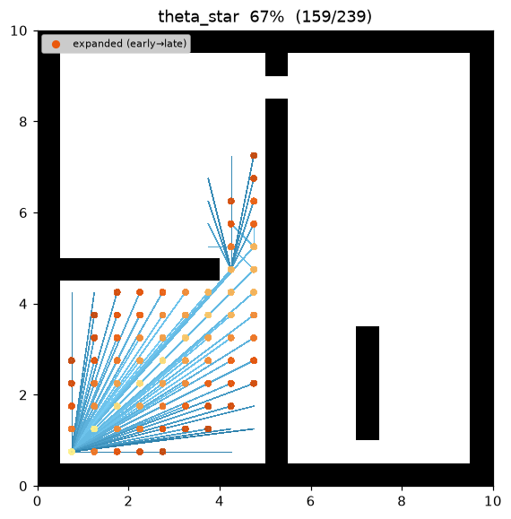
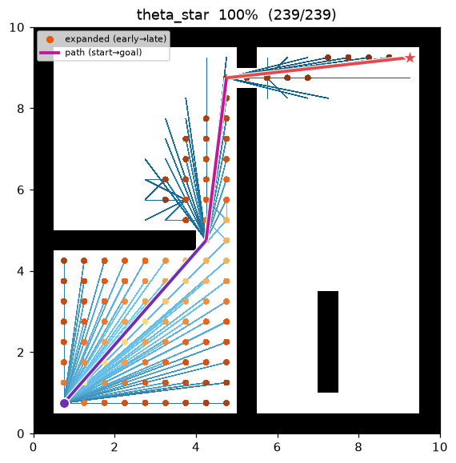
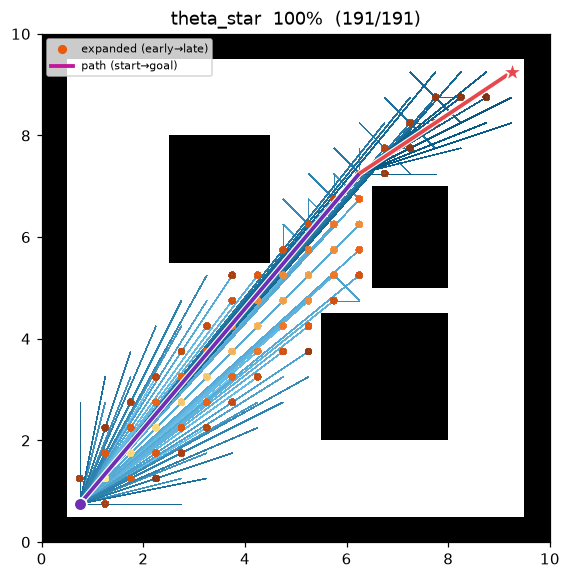

Theta* (any-angle)¶
| Item | Description |
|---|---|
| Category | any-angle graph search |
| Required capability | LineOfSightSpace (neighbors + heuristic + line_of_sight) |
| Completeness | complete (finite graphs, non-negative costs) |
| Optimality | any-angle path — grid-optimality is not guaranteed (basic Theta*, Nash et al. 2007) |
| Complexity | A* level + one line-of-sight check per relaxation |
| Original paper | Nash, Daniel, Koenig & Felner (2007) 1 · LOS: Amanatides & Woo (1987) 2 · weighted: Pohl (1970) 4 |
Background¶
A*3 on a grid lays its path only on grid edges (orthogonal and diagonal), so a stretch that could be crossed by a straight line still becomes a staircase that bends in 45°/90° steps. Theta*1 adds a single rule to A*: when relaxing a node, it checks whether a candidate's parent can be the parent of the current node rather than the current node itself — that is, whether there is an obstacle-free line of sight between the two. If there is, the path leaves the grid and takes an arbitrary-angle (any-angle) straight-line shortcut.
The resulting path has far sparser waypoints (it bends only at obstacle corners) and is shorter than
the grid path. In this repository's demo, maze01 shrinks from A* 26 waypoints · cost 28.73 to
Theta* 4 waypoints · cost 27.75.
How It Works¶
THETASTAR(start, goal):
g[start] ← 0; parent[start] ← start
open ← priority queue keyed by f = g + w·h # h = Euclidean straight-line distance
while open is not empty:
s ← open.pop_min()
if s == goal: return reconstruct(parent, s)
if s already settled: continue # lazy deletion
for (s2, edge_cost) in neighbors(s):
p ← parent[s]
if line_of_sight(p, s2): # Path 2 — any-angle shortcut
cand ← g[p] + euclid(p, s2); par ← p
else: # Path 1 — standard grid step
cand ← g[s] + edge_cost; par ← s
if cand < g[s2]: # relaxation
g[s2] ← cand; parent[s2] ← par
open.push(s2, cand + w·h(s2, goal))
return failure
The difference from A* is the single inner if line_of_sight(...) block. If the LOS check always
fails, it degenerates into exactly weighted A*. Because parent links are only ever set on pairs whose
LOS has been confirmed (Path 2 verifies visibility, Path 1 is between adjacent cells and therefore
trivial), every edge of the reconstructed path is an actually traversable straight line.
Line of Sight — one collision model with the grid¶
line_of_sight(a, b) decides whether the segment joining two cell centres is actually traversable,
using the same corner-cut-forbidden rule as neighbors(). The original paper used Bresenham, but
Bresenham visits only one cell per axis and can wrongly report a corner-grazing segment as "visible."
This repository reuses the supercover2, which visits every cell the segment touches (delegating
to the map's is_motion_valid). Therefore "a pair visible by LOS" ⇔ "a legal straight move," and
Theta* and grid A* share one collision model.
Heuristic — Euclidean (not octile)¶
Theta*'s g-values are straight-line (Euclidean) distances, so the heuristic is also Euclidean:
h(a, b) = √((Δrow)² + (Δcol)²)
The octile heuristic the map provides for A* satisfies octile ≥ Euclidean, so it is inadmissible (overestimating) for any-angle costs and is not used. The Euclidean distance is an admissible lower bound for arbitrary-angle motion.
Properties¶
- Completeness: complete on a finite grid with non-negative costs (same as A*).
- Optimality: basic Theta* guarantees neither grid-optimality nor true-optimality1. Because the local rule only ever inherits the grandparent as parent, it can miss the truly shortest any-angle path (though it stays very close). When strict optimality is required, use later variants such as Lazy Theta* / AP Theta*.
- Quality: the returned path cost is always ≤ the A* cost on the same grid — LOS shortcuts replace grid staircases.
- Complexity: the same search as A* plus one LOS check (linear in segment length) per relaxation.
- w > 1 (weighted Theta*, Pohl 19704): inflating the heuristic reduces expanded nodes at the cost of path quality.
Parameters¶
| Name | Type | Default | Range | Description |
|---|---|---|---|---|
heuristic_weight |
float | 1.0 | [1.0, 5.0] | The w in f = g + w·h (h is Euclidean). 1.0 = standard Theta*, above = weighted |
Implementation Notes¶
- C++:
cpp/src/global_planning/search/theta_star.cpp, Python:python/navigation/global_planning/search/theta_star.py - The Euclidean distance is computed as
sqrt(Δrow² + Δcol²), nothypot.hypotis not IEEE-754 correctly-rounded and can differ by 1 ULP between runtimes, which would make f-values, tie-breaking, and the emitted trace stream diverge between the two languages (the benchmark's C++/Python comparison relies on that stream).sqrtis correctly rounded, andsqrt(2.0)exactly equals the diagonal edge cost fromneighbors(), so a Path-2 diagonal shortcut and a Path-1 diagonal step are bit-identical. - Path cost is reported as
g[goal]. Summing adjacent edges would be wrong — it returns 0 for non-adjacent (any-angle) jumps. - Tie-breaking is the same
(f, insertion order)as A*, so the two languages converge to the same path — the maze01 expansion order matches cell-for-cell between C++ and Python.
Emitted Trace Events¶
planning_started → (node_expanded, candidate_evaluated, edge_added)* → path_found → planning_finished
In edge_added(state=s2, parent), parent becomes a non-adjacent grandparent on Path 2 (the
schema and the visualizer impose no adjacency constraint). replay.py draws the parent→state straight
line as-is to render the any-angle shortcut, so no new trace event is required.
Demo¶
Search on maze01. Like the A* frontier it grows toward the goal, but the final path is not a grid
staircase — it is a sparse straight-line polyline that only grazes obstacle corners.

Intermediate search progress (left → right: early / middle / final path):
 |
 |
 |
Final result on open01 — with few obstacles, start→goal connects as almost a single straight line:

Measurements (Python, w = 1.0, trace on · A* comparison on the same instance):
| map | Theta* cost | A* cost | Theta* expanded | A* expanded | Theta* waypoints |
|---|---|---|---|---|---|
| maze01 | 27.748 | 28.728 | 104 | 108 | 4 (A*: 26) |
| open01 | 24.241 | 25.213 | 66 | 71 | 3 (A*: 20) |
Reproduce:
python python/demos/demo_theta_star.py \
--map maps/grid/maze01.yaml --scenario maps/scenarios/maze01_s1.yaml \
--params configs/global_planning/theta_star.yaml --trace out/theta_star.jsonl
python tools/viz/replay.py out/theta_star.jsonl --gif out/theta_star.gif --snapshots out/theta_snaps/
References¶
-
Nash, A., Daniel, K., Koenig, S., & Felner, A. (2007). "Theta*: Any-Angle Path Planning on Grids." Proc. AAAI Conference on Artificial Intelligence, 1177–1183. PDF ↩↩↩
-
Amanatides, J., & Woo, A. (1987). "A Fast Voxel Traversal Algorithm for Ray Tracing." Proc. Eurographics, 3–10. PDF ↩↩
-
Hart, P. E., Nilsson, N. J., & Raphael, B. (1968). "A Formal Basis for the Heuristic Determination of Minimum Cost Paths." IEEE Transactions on Systems Science and Cybernetics, 4(2), 100–107. doi:10.1109/TSSC.1968.300136 ↩
-
Pohl, I. (1970). "Heuristic search viewed as path finding in a graph." Artificial Intelligence, 1(3–4), 193–204. doi:10.1016/0004-3702(70)90007-X ↩↩